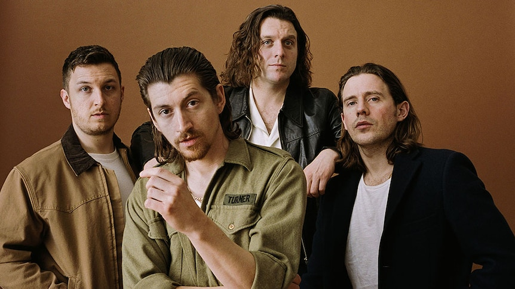

Solo Artists
Harry Styles
Harry Edward Styles is an English singer and songwriter. His musical career began in 2010 as a solo contestant on the British music competition series The X Factor. Following his elimination, he was brought back to join the boy band One Direction.

Taylor Swift
Taylor Alison Swift is an American singer-songwriter. Her genre-spanning discography, songwriting and artistic reinventions have received critical praise and wide media coverage. Born in West Reading, Pennsylvania, Swift moved to Nashville at age 14 to become a country artist.
Ed Sheeran
Edward Christopher Sheeran MBE is an English singer-songwriter. Born in Halifax, West Yorkshire, and raised in Framlingham, Suffolk, he began writing songs around the age of eleven. In early 2011, Sheeran independently released the extended play No. 5 Collaborations Project.
Selena Gomaz
Selena Marie Gomez is an American singer, actress, producer, and businesswoman. Gomez began her acting career on the children's television series Barney & Friends. As a teenager, she rose to prominence for starring as Alex Russo on the Disney Channel television series Wizards of Waverly Place.
Music Bands
One Direction
One Direction, often shortened to 1D, are an English-Irish pop boy band formed in London in 2010. The group is composed of Niall Horan, Liam Payne, Harry Styles, Louis Tomlinson, and previously Zayn Malik until his departure from the group in March 2015.
The Neighbourhood
The Neighbourhood is an American rock band formed in Newbury Park, California, in 2011. The band is composed of vocalist Jesse Rutherford, guitarists Jeremy Freedman and Zach Abels, and bassist Mikey Margott.

Arctic Monkeys
Arctic Monkeys are an English rock band formed in Sheffield in 2002. The group consists of Alex Turner, Jamie Cook, Nick O'Malley, and Matt Helders. Former band member Andy Nicholson left the band in 2006 shortly after their debut album was released.

Coldplay
Coldplay are a British rock band formed in London in 1997. They consist of vocalist and pianist Chris Martin, guitarist Jonny Buckland, bassist Guy Berryman, drummer Will Champion and creative director Phil Harvey.